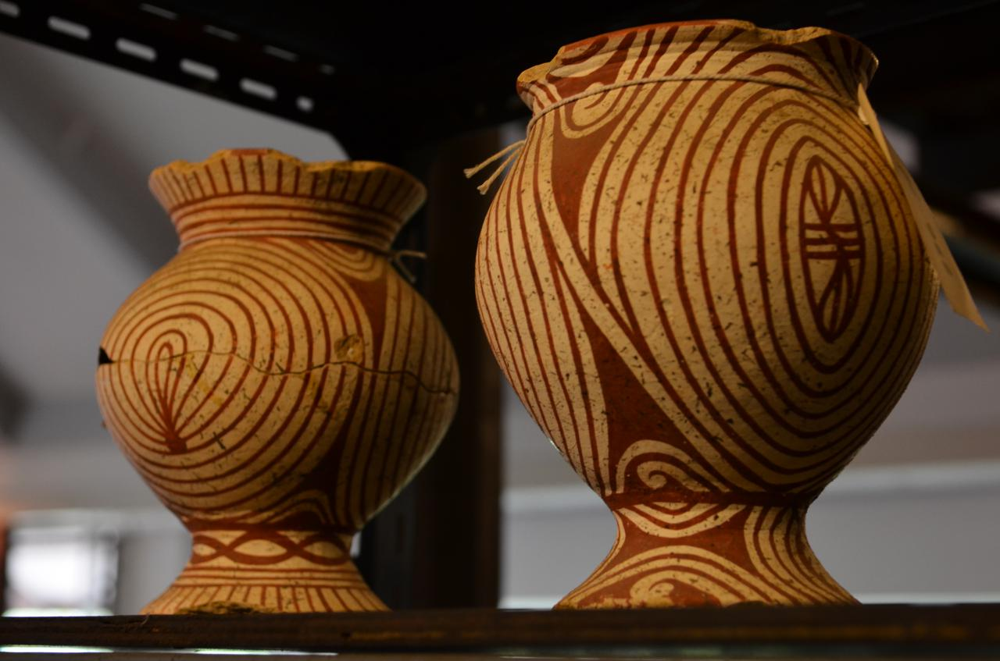

วัฒนธรรมและงานหัตถกรรม
บ้านเชียงเป็น “มรดกที่มีชีวิต” วิถีชุมชนในปัจจุบันเชื่อมโยงกับอัตลักษณ์และงานหัตถกรรมที่สืบทอดมาอย่างต่อเนื่อง
งานหัตถกรรม
ลวดลายและภาษาทางศิลปะ
- ลวดลายซ้ำ: เส้นโค้ง ลายก้นหอย และเส้นสาย
- โทนสีที่ได้รับแรงบันดาลใจจากดินเผา
- งานร่วมสมัยที่ต่อยอดจากมรดกทางวัฒนธรรม
การเคารพ
กิจกรรมพิเศษ
ข้อควรปฏิบัติในการเยี่ยมชม
- ขออนุญาตก่อนถ่ายภาพบุคคลหรือพื้นที่ส่วนบุคคล
- สนับสนุนงานชุมชนโดยการอุดหนุนสินค้าท้องถิ่น
- รักษาความสงบในโซนพิพิธภัณฑ์ และปฏิบัติตามป้ายแนะนำ
กิจกรรมพิเศษ
เวิร์กช็อปงานหัตถกรรม
🎨 ปั้นและวาดลวดลายเครื่องปั้นดินเผาบ้านเชียง
สถานที่: ศูนย์หัตถกรรมบ้านเชียง (ใกล้พิพิธภัณฑ์)
เวลา: ทุกวันเสาร์-อาทิตย์ เวลา 09:00-12:00 น.
ราคา: 350 บาท/ท่าน (รวมวัสดุและของที่ระลึก)
กิจกรรม:
- เรียนรู้เทคนิคการปั้นดินแบบโบราณ
- ลงสีและวาดลวดลายด้วยมือตามแบบบ้านเชียง
- นำผลงานกลับบ้านได้ (หลังตากแห้ง)
🧵 ทอผ้าลายพื้นเมืองอีสาน
สถานที่: กลุ่มทอผ้าบ้านเชียง
เวลา: ทุกวันศุกร์ เวลา 13:00-16:00 น.
ราคา: 250 บาท/ท่าน
กิจกรรม:
- เรียนรู้การทอผ้าด้วยกี่พื้นบ้าน
- ทดลองสร้างลายผ้าด้วยตัวเอง
- รับผ้าเช็ดหน้าที่ทอเองเป็นของที่ระลึก
💡 หมายเหตุ: ควรจองล่วงหน้าอย่างน้อย 3 วัน โทร 042-208-340